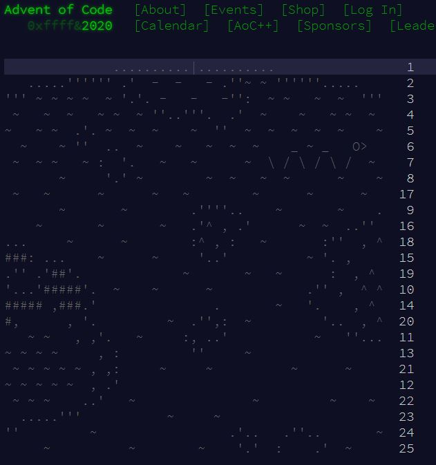

- Github
- codyjamesbrooks@gmail.com
Python Solutions to Advent of Code Puzzles

What is the Advent of Code?
The Advent of Code (AOC) is an annual coding event created by Eric Wastl. The event takes place during the month of December, where every day leading up to Christmas a new 2-part coding puzzle is released. The puzzles increase in difficulty as you approach Christmas, are designed to be solved using any programming language, and have a pleasant Christmas theme that help everyone feel a little bit more holiday cheer! The site has a leaderboard built in to encourage some friendly competition amongst the speedy solvers out there. I was introduced to AOC by a data science friend of mine (Thanks Mike!) and it quickly consumed all my free time.The AOC is that is an excellent tool to help anyone improve their programming skills, and I would recommend it to anyone that enjoys a good challenge. Each puzzle forces you to do any/all of the below actions.
- Read Data from webpage or txt file
- Effectively store and sort data
- Test your problem solving skills
- Develop thoughtful algorithms
- Debug and trouble shoot
I have personally been using the AOC to prepare for interviews, develop cleaner coding habits, and simply because the problems are very enjoyable. It is obvious to anyone that looks at the website, that Eric puts a ton of working into developing the event every year. So, thank you very much Eric! Keep up the great work!
I have not finished all of the puzzles yet, but I work on them when I can. All the solutions that I write can be found on my Github.